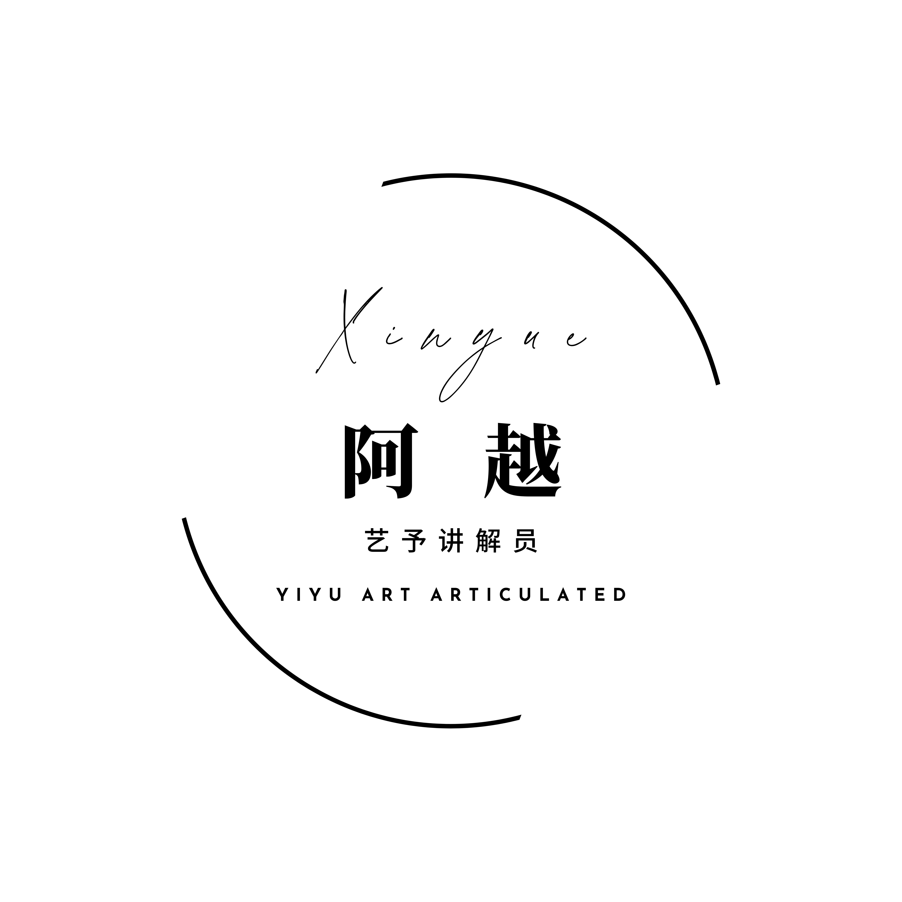

探险家登记
VOYAGER REGISTRATION
拖动小块互换位置复原玉玺
DRAG TO SWAP PIECES AND RESTORE
您的荣耀勋章
YOUR MEDAL OF GLORY
There are still locked “chambers” in the museum. Looking forward to exploring those with you again!
结语·讲解员说
THE DOCENT'S CLOSING
在大英讲解的这段时间里，我和客人们一起不断学习和成长。百余场讲解下来，我发现最重要的工作并不是罗列数据，而是通过这些真实的物件，带大家去寻找那些曾经鲜活存在过的、创造了这些文明的人。
During my time as a docent at the British Museum, I’ve found that the essence of my work is not listing figures, but using real objects to reconnect us with the vibrant individuals who built these civilizations.
这份工作让我有幸见证了许多次跨越时空的共鸣。当展柜后的历史与观众的当下产生联系，那些遥远的记忆便不再只是教科书上的名词，而是变得具体且真实。这让我意识到，我的工作不仅是严谨的研究与转述， 更是连接过去与当下——文物是连接过去、现在与未来的文化符号，更是承载集体记忆的实物载体。当我带你读懂一件文物，原本冰冷的陈列品就有了温度。通过这些转译，能让我们在漫长的文明长河中，看到那 些从未熄灭的智慧光芒——它们依然在照亮我们今天的路。
My work has allowed me to witness many moments of cross-temporal resonance. I realised that my role is not just about academic research and relay, but about creating connections. Artifacts are symbols connecting our timeline and vessels of collective memory. In the vast flow of history, these sparks of wisdom remain unquenched, still lighting our way today.
很荣幸能成为你今天的向导，愿你在这些与历史脉搏同频的呼吸中，领略文明交织的璀璨魅力，探索属于人类文明的共同记忆。更愿这次旅程能化作你心中的一颗火种，在未来的某个时刻，照亮你望向世界与自我的目光。
I am delighted to be your docent today. I hope you enjoy this exploration of our shared heritage through the pulse of history. May this journey become a spark within you, illuminating your gaze toward the world and yourself in the moments to come.

Yiyu · Senior Docent of the British Museum

心越 Xinyue
Yiyu · Senior Docent of the British Museum
